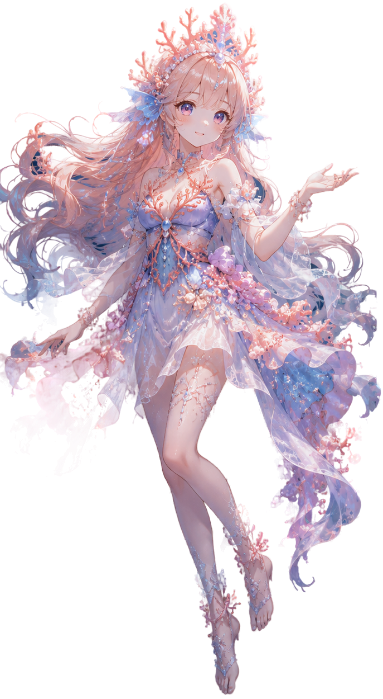

除錯
魚類
高斯點數: —
|
群落數: —
|
FPS: —
魚視角模式 — 點擊任意處或按 ESC 退出
操作說明
| 點擊 | 選取群落 · 飛近特寫 |
| 拖曳 | 旋轉視角 |
| 滾輪 | 縮放 |
| 右鍵拖曳 | 平移 |
| R | 重設為初始視角 |
| F | 重新對焦場景 |
| Esc | 取消選取 |

珊瑚娘 Coral-chan
載入高斯潑濺場景中…
首次載入可能需要 30–60 秒
3D 檢視器初始化失敗
模型檔案可能過大，或瀏覽器/GPU 不支援 WebGL2。